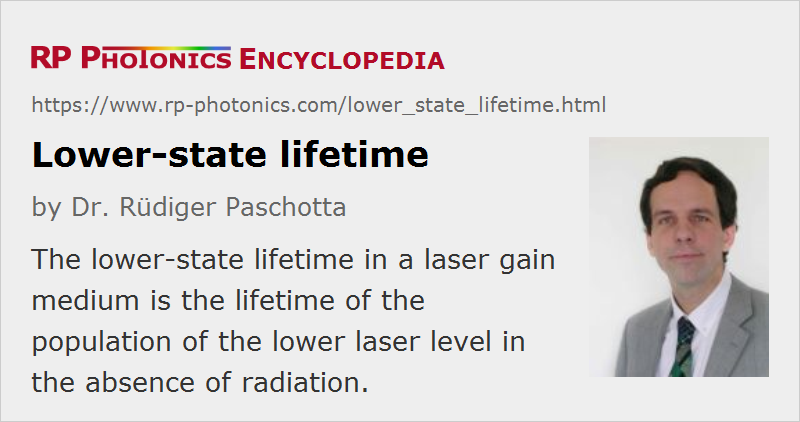

Lower-state Lifetime
Definition: the lifetime of the population of the lower laser level in the absence of radiation
Opposite term: upper-state lifetime
German: Lebensdauer des unteren Zustands
How to cite the article; suggest additional literature
Author: Dr. Rüdiger Paschotta
In a laser gain medium, both stimulated and spontaneous emission bring laser-active ions or atoms into the lower laser level. If a significant population can accumulate in that level, because it is not sufficiently quickly depleted, laser radiation can be absorbed, bringing the ions or atoms back to the upper laser level. Even though the absorbed energy is not strictly lost, this process is detrimental, because it effectively reduces the laser gain. Consequently, the threshold pump power can be increased and the power efficiency reduced.
Cases with Moderately Large Lower-state Lifetime
In many solid-state laser gain media (particularly in four-level gain media), the population of the lower laser level can never be large, because that level is too far above the ground state to have a significant population in thermal equilibrium, and because that equilibrium is quickly reached e.g. by multi-phonon transitions. Typical values of the lifetime of the lower laser level (called lower-state lifetime, lower level lifetime, or terminal level lifetime) are between a few picoseconds and tens of nanoseconds.
For continuous-wave lasers, such small values of the lower-state lifetime (far below the upper-state lifetime) effectively suppress any reabsorption on the laser transition. However, significant reabsorption effects can still occur when energy is very quickly extracted from the gain medium. This can be the case in Q-switched lasers, where the phenomenon can cause the formation of satellite pulses [1, 4], and in particular in amplifiers for ultrashort pulses (e.g. regenerative amplifiers based on Ti:sapphire or rare-earth-doped gain media), where significant amounts of energy are extracted from the gain medium within a few picoseconds or even less. A clear signature for this effect is the reduction in the amplifier gain and efficiency for short durations of the amplified pulses. A possible countermeasure is the selection of a host crystal (or glass) with a smaller lower-state lifetime. (Unfortunately, measured data are sparse.) Also, chirped-pulse amplification effectively solves this problem, because it strongly increases the pulse duration within the amplifier.
In mode-locked lasers, a lower-state lifetime in the picosecond or even nanosecond regime usually has no significant effect, even if the pulse duration is far below the lower-state lifetime. This is because the circulating pulse energy is usually very small compared with the saturation energy, so that only a very small fraction of the upper-state population is transferred to the lower laser level during the amplification of a pulse.
Cases with Long Lower-state Lifetime
A few solid-state gain media have laser transitions where the lower-state lifetime is really large – sometimes even several milliseconds, possibly larger than the upper-state lifetime. An example of this situation is the 2.7-μm transition (4I11/2 → 4I13/2) of Er3+ in fluoride fibers. Here, there are no multi-phonon processes depopulating the lower laser level, and the pump radiation also cannot affect this population. In that case, the laser transition is usually self-terminating. A method for avoiding this is to exploit cooperative lasing.
Questions and Comments from Users
Here you can submit questions and comments. As far as they get accepted by the author, they will appear above this paragraph together with the author’s answer. The author will decide on acceptance based on certain criteria. Essentially, the issue must be of sufficiently broad interest.
Please do not enter personal data here; we would otherwise delete it soon. (See also our privacy declaration.) If you wish to receive personal feedback or consultancy from the author, please contact him e.g. via e-mail.
By submitting the information, you give your consent to the potential publication of your inputs on our website according to our rules. (If you later retract your consent, we will delete those inputs.) As your inputs are first reviewed by the author, they may be published with some delay.
Bibliography
| [1] | T. Y. Fan, “Effect of finite lower level lifetime on Q-switched lasers”, IEEE J. Quantum Electron. 24 (12), 2345 (1988), doi:10.1109/3.14358 |
| [2] | C. Bibeau et al., “Direct measurements of the terminal laser level lifetime in neodymium-doped crystals and glasses”, J. Opt. Soc. Am. B 12 (10), 1981 (1995), doi:10.1364/JOSAB.12.001981 |
| [3] | C. Bibeau et al., “Pulse length and terminal-level lifetime dependence of energy extraction for neodymium-doped phosphate amplifier glass”, IEEE J. Quantum Electron. 32 (8), 1487 (1996), doi:10.1109/3.511562 |
| [4] | S. P. Ng, “Satellite pulse generation in diode-pumped Q-switched Nd:GdVO4 lasers”, IEEE J. Quantum Electron. 42 (7), 625 (2006), doi:10.1109/JQE.2006.875866 |
See also: upper-state lifetime, self-terminating laser transitions, cooperative lasing, gain media, rare-earth-doped gain media, four-level and three-level gain media, optical amplifiers, regenerative amplifiers, gain
and other articles in the category lasers
|  |
If you like this page, please share the link with your friends and colleagues, e.g. via social media:
These sharing buttons are implemented in a privacy-friendly way!